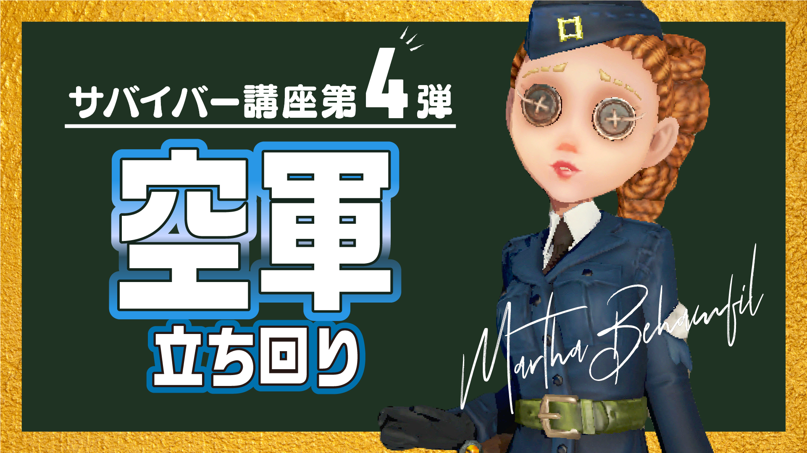

１〜５段のサバイバー向けに作った動画です。勝率80％ない人には参考になると思います。
サバイバーで引き分けを取るための方法を解説した動画です。6段までのサバイバーなら90％以上の人ができていない立ち回りを紹介しています。
「味方が殴られれば通電すればいいや！」と思っているそこのあなた...！見ていって損はしないかと...！
サバイバーの基本である、板の使い方について解説をした動画です。板の使い方次第でチェイス時間は倍は変わります。
１つ前の動画の補足です。この動画の内容が実践できるようになると第五配信者レベルに到達できます。土壇場で力強さを発揮するチェイスができます。
傭兵使いのみならず、救助キャラを使う人は必見です。1年前の動画で、今見返したら「え...こんなに下手なのに動画投稿してたのか...」と悲しくなりましたが、発言内容自体は正しいと思われます。
登場時点から現在まで"最強キャラ"のうちの一人から外れたことは一度もありません。占い師を使いこなせるようになれば女の子にモテます。
登場時は強過ぎて弱体化が入ったのち、再強化が入り今に至ります。今後も環境キャラの一角を担うと予想されます。祭司を使いこなせるようになればハンターに嫌われます。
傭兵を使う方は見ておいて損はないと思います。地下救助の鉄則を解説しています。
おすすめ度１

ガラテアやウィル３兄弟によって活躍の場が失われつつあるキャラですが僕は好きです。

最強サバイバーの一角ですが操作が難しいです。4人編成の中で一番上手人が使うとよいと思われます。

ハンターで勝つ方法を解説しています。フラライで勝率90%なければ見ておくといいかもしれません！
肘当ての使い方について解説しています。傭兵使いなら必見です。
「サムネイルはとりあえず文字を大きくすればいい」そう思っていた頃の動画です。
この頃のサムネイルにセンスがないことだけは分かります。内容は真面目です。
ハンター別対策
No.1からNo.6まではYouTubeで無料公開しています。YouTubeのメンバーシップでハンター対策No.7〜12を公開しています。
リッパーの対策動画です。説明文が雑になってきてすいません
ハスターの対策動画です。タコへの悪口(?)で炎上しかけましたが悪意はないですごめんなさい。でも"引き留める"がついているかどうか判断しづらいのは直すべきです。
女王の対策動画です。基本的なサバイバーの立ち回りも解説しています。
無常の対策動画です。個人的に、無常は全ハンター１勝ちやすいのでぜひ対策できるようになりましょう。（もちろんお相手次第です）
写真家（ジョゼフ）の対策です。相手がどこで何をしているのかをしっかり意識しましょう。
芸者の対策です。強化が入る前の動画ですが、蝶を拾ってしまえばこの動画の通りです。と言いつつ動画作った本人が芸者は苦手です。